SmolLM3 官方技术博客
SmolLM3：小型、多语言、长上下文推理模型
原文：Hugging Face 官方技术博客 ，发表于 2025-07-08。本文是官方博客的中文全文，非 arXiv 论文。图表与代码保留原样。
作者（原文账号）：eliebak、cmpatino、anton-l、edbeeching、m-ric、nouamanetazi、akseljoonas、guipenedo、hynky、clefourrier、SaylorTwift、kashif、qgallouedec、hlarcher、glutamatt、Xenova、reach-vb、ngxson、craffel、lewtun、loubnabnl、lvwerra、thomwolf。
随着用户寻求能够高效部署、能力出色的模型，小型语言模型正变得越来越重要。社区推出了丰富的小模型，每个都在推动这一规模下能力的边界。通过 SmolLM3，我们很高兴贡献一个新的、具有竞争力的完全开放 3B 模型：
SmolLM3 处于效率的理想区间。 我们的 3B 模型优于 Llama-3.2-3B 和 Qwen2.5-3B，同时与更大的 4B 替代模型 Qwen3 和 Gemma3 保持竞争力。除了性能数字，我们还准确分享了如何使用公开数据集和训练框架构建它。
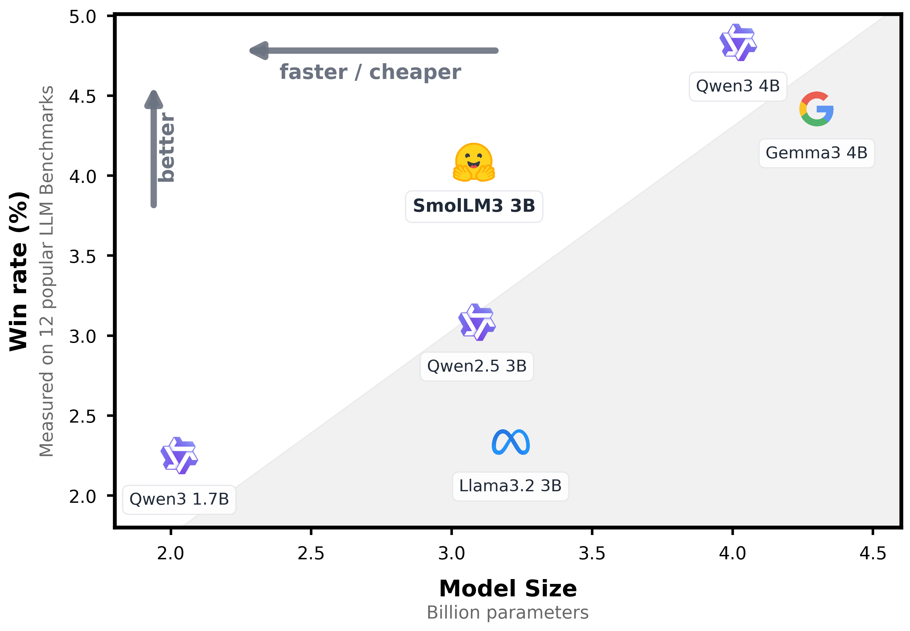
模型概览：
3B 模型 ，使用 11T tokens 训练，在 3B 规模达到先进水平，并可与 4B 模型竞争。具有双模式推理 的指令模型 ，支持 think／no_think 模式。 多语言支持 ：英语、法语、西班牙语、德语、意大利语和葡萄牙语，共 6 种语言。长上下文 ：通过 NoPE 和 YaRN 支持最多 128k。完整配方： 我们随 SmolLM3 一起发布工程蓝图，包括架构细节、精确的数据混合——展示如何通过三阶段预训练逐步提升各领域性能——以及构建混合推理模型的方法。通常，要达到这些结果需要花费数月进行逆向工程。我们直接提供完整方法。
无论你是在构建自己的模型，还是希望了解这一规模下性能的驱动力，这份蓝图都展示了具有竞争力的 3B 性能背后的工程过程。
先来看预训练阶段。
预训练 相比此前的模型，SmolLM3 同时改变了架构和数据混合。先看架构与训练配置。
架构与训练细节
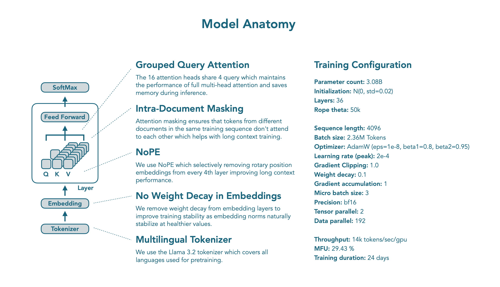
SmolLM3 使用 Transformer 解码器架构，与 SmolLM2 类似，共享 embedding 权重；它基于 Llama 架构，并进行了若干关键修改，以优化效率和长上下文表现。
GQA： 我们将 MHA 替换为使用 4 组的 GQA。我们在使用 FineWeb-Edu 的 100B tokens 训练的 3B 模型上开展消融，表明 GQA 可以达到 MHA 的性能，同时显著减小推理时的 KV cache。
NoPE： 我们实现了 《从 RoPE 到 NoRoPE，再回到 RoPE：一种新的混合 attention 策略》 （Yang et al., 2025）中的 NoPE，有选择地每隔 4 层移除一层的 RoPE。这种方法改善长上下文表现，同时不影响短上下文能力，消融实验验证了这一点。
文档内掩码： 遵循 《分析序列组成对语言模型预训练的影响》 ，我们在训练中使用 attention 掩码，确保同一训练序列中的不同文档之间，tokens 不会互相关注。与 Llama 3 类似，这有助于更快、更稳定地训练长上下文，同时保持短上下文性能。
训练稳定性： 遵循 OLMo 2，我们取消 embedding 层的权重衰减，以改善训练稳定性。这一修改带来更稳定的训练动态，使 embedding 范数在训练过程中自然稳定在更健康的数值，而我们的消融表明，整体性能未受影响。
所有这些修改都通过消融验证：使用相同的 3B 架构，在 FineWeb-Edu 的 100B tokens 上训练，确保每个修改要么改善性能，要么在保持性能的同时带来其他好处。
训练配置： 我们使用 2.36M tokens 的全局 batch 大小，序列长度为 4096，学习率为 2e-4，使用 AdamW 优化器（beta1：0.9，beta2：0.95），权重衰减为 0.1，gradient 裁剪为 1。采用 WSD（warmup–稳定–衰减）调度器，warmup 2000 步，在最后 10% 的训练步数中线性衰减至 0。训练使用 nanotron ，数据处理使用 datatrove ，评测使用 lighteval 。模型在 384 张 H100 GPU 上训练了 24 天。分布式训练设置见下图。
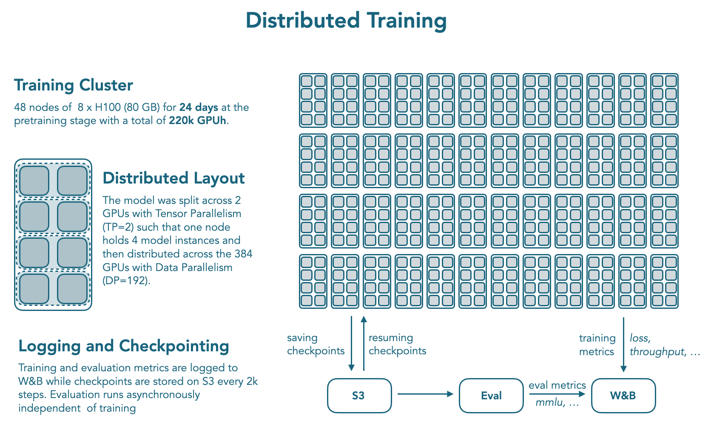
除了架构修改，我们还对训练配方进行消融并改进。下面仔细看看。
数据混合与训练阶段
遵循 SmolLM2 的多阶段方法，我们采用三阶段训练策略，在 11.2T tokens 上训练 SmolLM3，以动态变化的比例混合网页、数学和代码数据。我们对训练了 50B 到 100B tokens 的 3B 模型开展大量消融，以确定数据混合及比例。
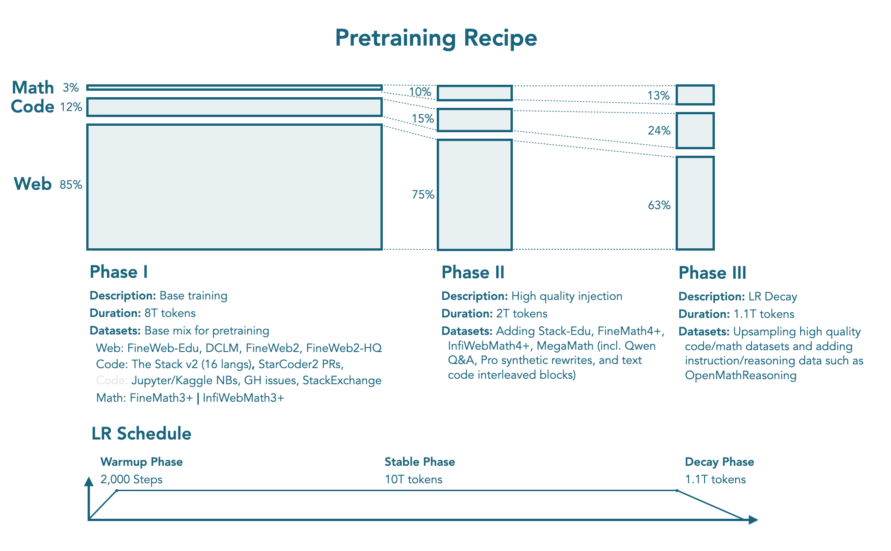
预训练包含以下阶段，上图也展示了这些阶段：
阶段 1：稳定阶段（0T → 8T tokens）。 这一基础阶段通过核心数据集混合建立强大的通用能力：网页：85%（12% 多语言），包括 FineWeb-Edu、DCLM、FineWeb2 和 FineWeb2-HQ。 代码：12%，包括 The Stack v2（16 种编程语言）、StarCoder2 拉取请求、Jupyter 与 Kaggle notebooks、GitHub issues 和 StackExchange。 数学：3%，包括 FineMath3+ 与 InfiWebMath3+。 阶段 2：稳定阶段（8T → 10T tokens）。 保持良好的网页覆盖，同时引入更高质量的数学与代码数据集：网页：75%（12% 多语言）。 代码：15%，加入 Stack-Edu。 数学：10%，引入 FineMath4+、InfiWebMath4+ 与 MegaMath，包括 Qwen 问答、Pro 合成改写，以及文本–代码交错块。 阶段 3：衰减阶段（10T → 11.1T tokens）。 最后阶段进一步提高数学与代码数据的采样比例：网页：63%（12% 多语言）。 代码：24%，提高高质量代码数据的采样比例。 数学：13%，提高数学数据的采样比例，并引入 OpenMathReasoning 等指令与推理数据集。 这些阶段与混合使基础模型获得了很有竞争力的性能，评测部分将进一步介绍。包含精确数据权重的 nanotron 训练配置可在这里 获取。我们还将分享训练日志和中间 checkpoint。
主要预训练之后，我们通过中期训练阶段改善模型的长上下文和推理能力。
中期训练 我们将长上下文适应和推理适应称为“中期训练”。它们比主要预训练短得多，但仍具有一定通用性，旨在改善模型在这两个领域的能力。先看长上下文训练。
长上下文扩展
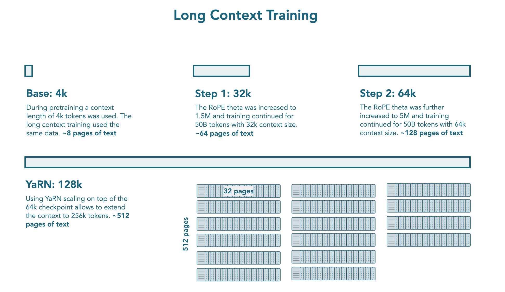
主要预训练之后，我们在额外的 100B tokens 上训练 SmolLM3，以扩展上下文长度。我们按顺序分两个阶段扩展上下文窗口，每个阶段训练 50B tokens：先从 4k 扩至 32k 上下文，将 RoPE theta 提高至 1.5M；再从 32k 扩至 64k 上下文，将 RoPE theta 提高至 5M。两个阶段都提高了数学、代码和推理数据的采样比例。消融中，我们发现，除了混合中天然较长的样本以外，额外提高代码仓库、书籍和长网页等特定长上下文数据的采样比例，并没有进一步提高 RULER 和 HELMET 基准的表现。使用 NoPE，并在衰减阶段的数据混合上以更长序列和更大的 RoPE theta 值训练，已足以在最多 64k 上下文上获得有竞争力的性能。
遵循 Qwen2.5，我们使用 YARN 外推至训练上下文长度之外。推理时，模型可处理最多 128k 上下文，即 64k 训练长度的 2 倍。
推理中期训练
扩展模型的上下文长度后，我们在中期训练阶段训练它，以加入推理能力。中期训练与预训练、后训练阶段的主要区别在于：我们面向一种通用能力，而尚未聚焦特定领域。在这里，我们希望训练模型进行推理，而不专门针对数学或计算机代码等某个领域。
中期训练数据集包含 35B tokens，来自 Open Thought 的 OpenThoughts3-1.2M ，以及 NVIDIA 的 Llama-Nemotron-Post-Training-Dataset-v1.1 的一个子集，包含 R1 的推理轨迹。我们使用 ChatML 聊天模板与 wrapped packing ，避免给模型提供过多结构。模型训练了 4 个 epoch，约 140B tokens，所得 checkpoint 用于后续 SFT 阶段。
后训练
DeepSeek R1 和 Qwen3 等推理模型的发布，展示了模型能够显式推理时涌现出的强大能力。然而，社区仍缺少使用公开数据集、构建同时支持推理与非推理模式的双模式指令模型的完全开放配方。大多数现有方法涉及复杂的强化学习过程和专有数据集，使研究者难以复现并在这些结果上继续构建。
本节解释我们如何应对这些挑战，并分享构建双模式指令模型的完整配方。我们详细说明了如何通过精心设计的训练流水线，在推理和非推理模式之间平衡性能；流水线包括面向通用推理能力的中期训练、结合合成数据生成的 SFT，以及使用 APO 进行对齐。APO 是 DPO 的一个近期变体。
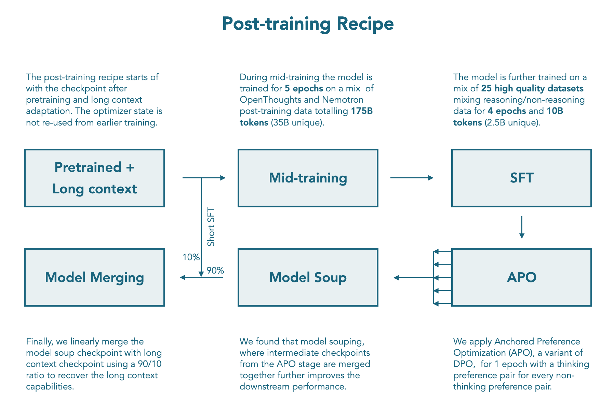
构建聊天模板
深入训练方法之前，需要先明确用户如何与双模式模型交互。聊天模板是实现推理与非推理模式无缝切换的接口，其设计直接影响训练数据格式和模型行为。SmolLM3 的聊天模板允许用户在对话中控制推理模式。用户可分别在系统提示词中加入 /think 和 /no_think 标记，开启推理或非推理模式。在非推理模式下，与 Qwen3 类似，我们使用空的 think 块 prefill 模型回答，以确保直接作答而不显式推理。
SmolLM3 支持工具调用，其聊天模板中，工具描述分为两个不同部分：XML Tools 和 Python Tools。实验表明，这种具体分类有助于模型准确理解各格式的工具定义。
聊天模板为两种推理模式都提供默认系统消息，并包含元数据部分，记录日期、知识截止日期及当前推理模式。用户可以提供 system 角色消息，替换默认系统消息。在系统提示词中使用 /system_override 标记，可以排除元数据部分，为特定用途提供灵活性。
SFT
推理中期训练阶段在 140B tokens 的通用推理数据上训练模型，随后进行 SFT，以在推理和非推理两种模式下加入数学、代码、通用推理、指令遵循、多语言及工具调用能力。训练双模式模型，需要谨慎平衡数据混合，才能在所有目标领域中保持两种模式的出色性能。为在训练过程中评估 SmolLM3，我们跟踪了数学、代码、通用推理、指令遵循和多语言领域。
构建推理模式数据集时，遇到的主要挑战是某些领域中包含推理轨迹的数据集稀缺。为弥补这一缺口，我们使用现有非推理数据集的提示词，提示处于推理模式的 Qwen3-32B 生成合成数据。这使我们能改善模型最初在推理模式下表现不佳的领域，例如多轮对话、多语言和日常对话。
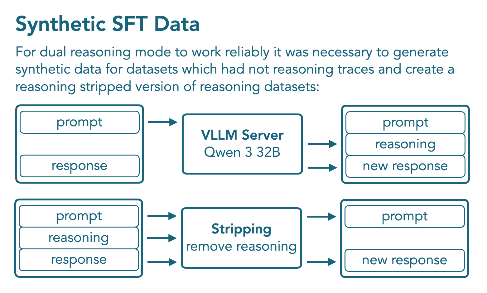
最终的数据混合来自大量消融实验，探索推理 tokens 与非推理 tokens 的最佳比例，以及每种模式内的组成。所得 SFT 数据集包含 1.8B tokens：1B 属于非推理模式，0.8B 属于推理模式，由 12 个非推理数据集和 10 个带推理轨迹的数据集组成。我们使用 BFD（best-fit decreasing，递减最佳适配）packing 训练了 4 个 epoch，约 8B tokens，对用户轮次和工具调用结果的损失进行掩码。
我们将发布该数据混合及完整训练脚本，使社区能够复现并继续开展工作。
使用 APO 进行 Off-Policy 模型对齐
SFT 之后，我们进行一轮模型对齐，将用于非推理模式的 Tulu3 偏好数据集 ，与通过 Qwen3-32B 和 Qwen3-0.6B 新生成的推理模式合成偏好对结合。为了完整覆盖非思考数据集中的所有领域，我们生成了对应的思考模式偏好对。选择 Qwen3-32B 的生成结果作为 “chosen”，Qwen3-0.6B 的回答作为 “rejected”，使用 APO 进行对齐。
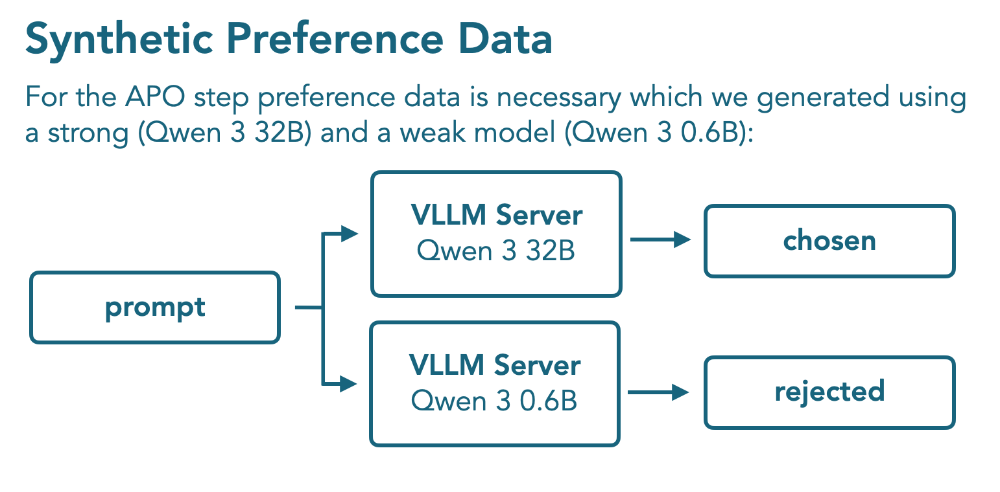
APO （APO）是 DPO （DPO）的变体，提供更稳定的优化目标。在 DPO 中，奖励函数 \(r_{\theta }(x,y)\) 衡量训练期间序列概率，相对于训练开始时模型——即参考模型——的序列概率的对数比：
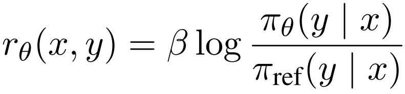
这里，\(\beta\) 控制被优化模型相对于参考模型可以改变多少。DPO 损失优化由提示词 \(x\)、被选择回答 \(y_{w}\) 和被拒绝回答 \(y_{l}\) 组成的三元组：
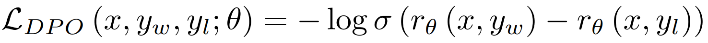
APO 目标已被证明更稳定，我们也在内部消融中观察到更高的下游性能。
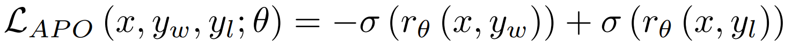
虽然下游评测在数学、科学、指令遵循、代码、聊天和多语言任务上都显示改善，但我们观察到 RULER 等长上下文基准性能下降。我们将这一退化追溯到推理中期训练阶段：对推理能力的侧重影响了长上下文性能。此外，由于绝大多数推理数据短于 24k tokens，APO 训练数据也被限制在这一长度以内。
为减轻这一性能下降，我们探索使用模型合并作为解决办法。
模型合并
模型合并是一种常用且强大的技术，可以结合不同模型的优势，而无需承担集成的计算开销，也无需额外训练。我们使用 MergeKit 库进行模型合并，它包含线性与非线性等多种合并方法。
我们的合并配方包含两步：
取每个 APO checkpoint，构建一个模型“汤”。 将模型汤与具有出色长上下文性能的中期训练 checkpoint 组合。线性合并效果最佳：APO 模型汤权重为 0.9，中期训练 checkpoint 权重为 0.1。我们能够在最多 128k tokens 的上下文上恢复基础模型的 RULER 分数。 所得模型就是今天发布的 checkpoint。它在广泛的任务上保持性能。因此，接下来看看该模型和基础模型的评测结果。
评测 我们评估基础模型，以及指令模型在推理和非推理模式下的表现。先看基础模型的性能。
基础模型 下图展示了 SmolLM3 在 12 个常用基准上的胜率，这些基准评估知识、推理、数学和代码能力。SmolLM3 稳定优于其他 3B 模型，并与更大的 4B 模型，包括 Qwen3-4B 和 Gemma3-4B，取得有竞争力的表现。
计算胜率所使用的评测基准：HellaSwag、ARC、Winogrande、CommonsenseQA、MMLU-CF、MMLU Pro CF、PIQA、OpenBookQA、GSM8K、MATH、HumanEval+、MBPP+。
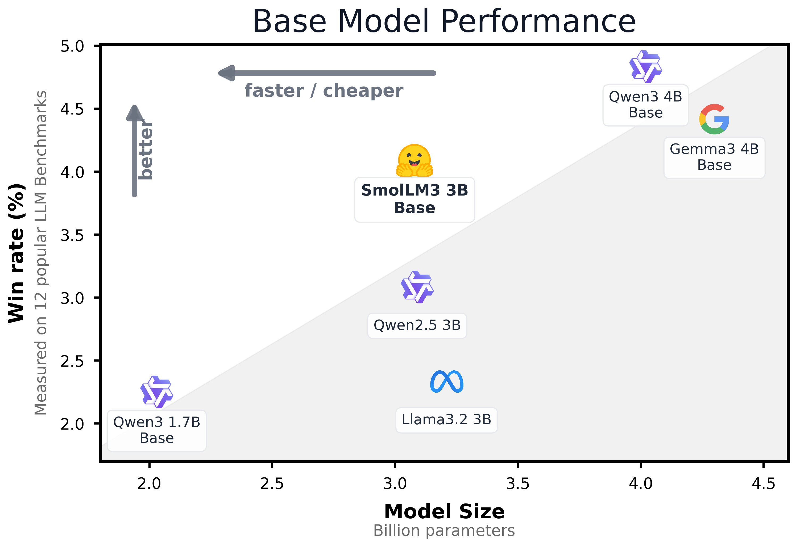
SmolLM3 在知识和推理基准 HellaSwag、ARC、BoolQ 上排名第一或第二，展现了这些核心能力的出色性能。数学与代码表现，在 3B 类别中具有竞争力。Ruler 64k 上的长上下文性能，表明模型能够有效处理扩展后的序列。
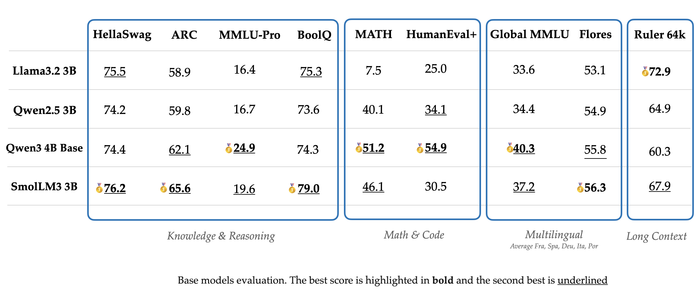
在 Global MMLU、MLMM HellaSwag、Flores-200 和 Belebele 等多语言基准上评估时，模型在五种主要欧洲语言中展现出出色的多语言表现；这些基准测试知识、常识推理、文本理解和翻译。这表明，SmolLM3 在英语以外仍保持稳定的性能。
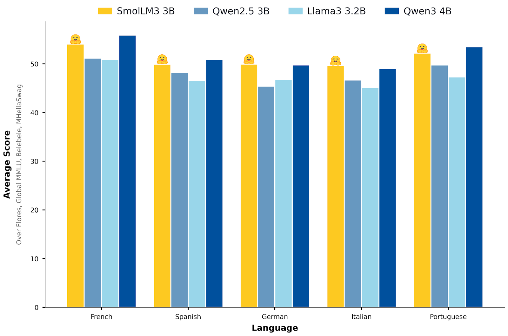
总体而言，基础模型在许多领域都表现出色。接下来看看这些能力如何体现为指令模型的表现。
双模式指令／推理模型 由于 SmolLM3 同时具备指令和推理模式，我们需要分别评估两种模式，并与具有相同能力的模型比较。
不开启扩展思考的评测
我们在多个基准上，将 SmolLM3 与其他 3B 非推理模型比较，并与处于无思考模式的 Qwen3 推理模型比较。如性能图所示，SmolLM3 优于 Llama3.2 3B Instruct 和 Qwen2.5 3B Instruct 等其他 3B 非推理模型，在推理模型之间处于效率的理想区间：显著优于 Qwen3 1.7B，同时以较低计算成本接近 4B 模型的性能。
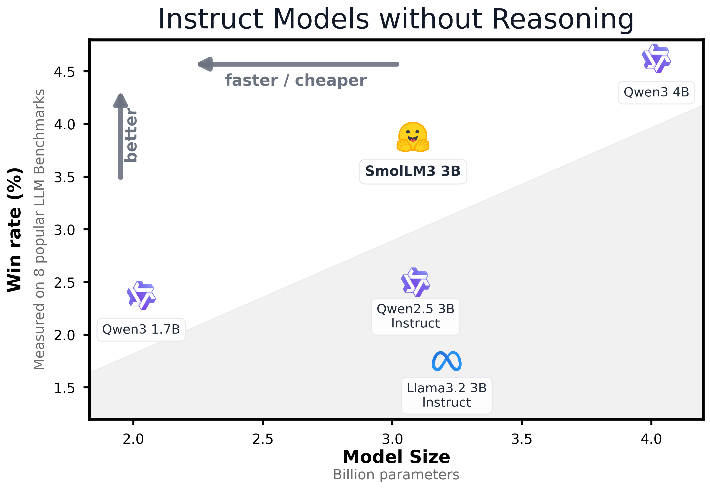
因此，指令模型处于性能与成本的帕累托前沿。下面看看推理模型的表现。
开启扩展思考的评测
开启扩展思考、评估 SmolLM3 的推理能力时，相比非推理版本，模型在大多数基准上显著改善。我们在挑战性任务中观察到明显提升，例如 AIME 2025（36.7% 对 9.3%）、LiveCodeBench 竞赛编程（30.0% 对 15.2%）和 GPQA Diamond 研究生水平推理（41.7% 对 35.7%）。
虽然 Qwen3 4B 通常在思考与非思考两种模式下都取得最高分，SmolLM3 在 3B 参数类别中展现出有竞争力的性能，尤其擅长数学推理和复杂问题求解。模型的双模式能力，使用户能够选择不进行推理的更快推理过程，或通过扩展思考进行更深入的分析。
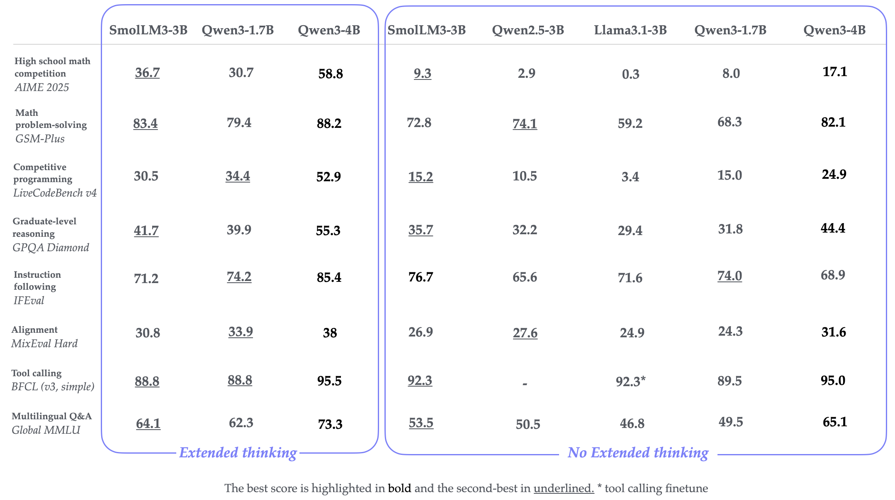
最后一个问题是：如何使用这个模型？
如何在本地运行 SmolLM3 的模型代码已包含在 Transformers v4.53.0 中，因此请升级 Transformers 版本。也可使用最新版 vllm 加载模型，它使用 Transformers 作为后端。
pip install -U transformersfrom transformers import AutoModelForCausalLM, AutoTokenizer
model_name = "HuggingFaceTB/SmolLM3-3B"
device = "cuda" # for GPU usage or "cpu" for CPU usage
# load the tokenizer and the model
tokenizer = AutoTokenizer.from_pretrained(model_name)
model = AutoModelForCausalLM.from_pretrained(
model_name,
).to(device)
# prepare the model input
prompt = "Give me a brief explanation of gravity in simple terms."
messages_think = [
{"role": "user", "content": prompt}
]
text = tokenizer.apply_chat_template(
messages_think,
tokenize=False,
add_generation_prompt=True,
)
model_inputs = tokenizer([text], return_tensors="pt").to(model.device)
# Generate the output
generated_ids = model.generate(**model_inputs, max_new_tokens=32768)
# Get and decode the output
output_ids = generated_ids[0][len(model_inputs.input_ids[0]) :]
print(tokenizer.decode(output_ids, skip_special_tokens=True))
我们建议在采样参数中设置 temperature=0.6 和 top_p=0.95。
开启与关闭扩展思考模式 我们默认开启扩展思考，因此上面的示例会生成包含推理轨迹的输出。为了选择是否开启，可以在系统提示词中提供 /think 和 /no_think 标记。以下代码片段展示了关闭扩展思考的情况。生成开启扩展思考回答的代码相同，只需将系统提示词中的 /no_think 替换为 /think。
prompt = "Give me a brief explanation of gravity in simple terms."
messages = [
{"role": "system", "content": "/no_think"},
{"role": "user", "content": prompt}
]
text = tokenizer.apply_chat_template(
messages,
tokenize=False,
add_generation_prompt=True,
)
Agent 用途 SmolLM3 支持工具调用！只需通过参数 xml_tools 传入工具列表，用于标准工具调用；或通过 python_tools 传入，用于在 <code> 片段中像调用 Python 函数一样调用工具。
from transformers import AutoModelForCausalLM, AutoTokenizer
checkpoint = "HuggingFaceTB/SmolLM3-3B"
tokenizer = AutoTokenizer.from_pretrained(checkpoint)
model = AutoModelForCausalLM.from_pretrained(checkpoint)
tools = [
{
"name": "get_weather",
"description": "Get the weather in a city",
"parameters": {"type": "object", "properties": {"city": {"type": "string", "description": "The city to get the weather for"}}}}
]
messages = [
{
"role": "user",
"content": "Hello! How is the weather today in Copenhagen?"
}
]
inputs = tokenizer.apply_chat_template(
messages,
enable_thinking=False, # True works as well, your choice!
xml_tools=tools,
add_generation_prompt=True,
tokenize=True,
return_tensors="pt"
)
outputs = model.generate(inputs)
print(tokenizer.decode(outputs[0]))
结论 我们发布了 SmolLM3，一个小型、长上下文、多语言推理模型，支持最多 128k 上下文。除了模型 checkpoint，我们还发布完整训练配方，涵盖预训练、中期训练、后训练和合成数据生成，以及数据集（即将发布）。希望这一模型对社区有用，也希望配方使其他团队能够在此基础上改进。
资源
引用
@misc{bakouch2025smollm3,
title={{SmolLM3: smol, multilingual, long-context reasoner}},
author={Bakouch, Elie and Ben Allal, Loubna and Lozhkov, Anton and Tazi, Nouamane and Tunstall, Lewis and Patiño, Carlos Miguel and Beeching, Edward and Roucher, Aymeric and Reedi, Aksel Joonas and Gallouédec, Quentin and Rasul, Kashif and Habib, Nathan and Fourrier, Clémentine and Kydlicek, Hynek and Penedo, Guilherme and Larcher, Hugo and Morlon, Mathieu and Srivastav, Vaibhav and Lochner, Joshua and Nguyen, Xuan-Son and Raffel, Colin and von Werra, Leandro and Wolf, Thomas},
year={2025},
howpublished={\url{https://huggingface.co/blog/smollm3}}
}